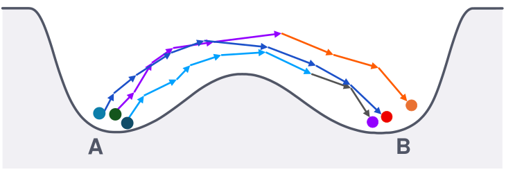
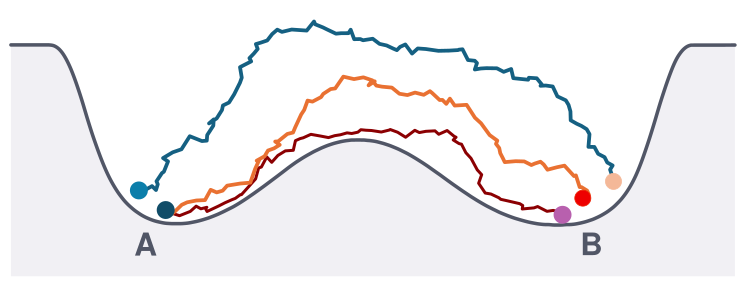

TLDR: We introduce action learning, which treats the stochastic action of a system as the learning target and recovers it from trajectory samples as a differentiable path space objective, reusable for inference, steering and sampling without retraining.
Understanding and controlling how systems evolve is central to science and engineering, where many problems require reasoning about complete trajectories. Existing approaches typically learn local dynamics or generate trajectories, but objectives constructed from individual transitions can miss dependencies across time, while generative models do not necessarily provide a tractable objective for evaluating and optimizing arbitrary paths. We study action learning, the problem of recovering a stochastic action from trajectory observations, yielding a common objective for reasoning about dynamical systems. We introduce LEAP (Learned Energy on Action Paths), which anchors the unknown action to a tractable reference process and learns the remaining correction by comparing observed trajectories with reference trajectories. This construction yields a differentiable objective on path space that can capture both local dynamical structure and nonadditive dependencies across time. Once learned, the same action can be flexibly reused for path ranking and inference, mechanism steering, constrained optimization and sampling. Across stochastic physical systems, many-body orbital dynamics and molecular simulations, LEAP recovers underlying dynamics, captures dependencies across time and enables transfer across inference objectives and physical conditions. We show that action learning is a promising framework for turning trajectory observations into reusable objectives for scientific inference and control.
Many scientific questions concern whole trajectories, such as which route a molecule takes between two conformations, which intermediates a transition passes through or which paths stay likely once we add a constraint, and answering them requires a way to evaluate and optimize complete paths. When the dynamics are known, the Onsager–Machlup action provides exactly this, assigning every complete trajectory a cost whose minimizers are the most probable paths and whose main term, for a diffusion, accumulates how far the velocity departs from the drift.
In most applications the dynamics are unknown, and what we have are trajectories from simulation or experiment. Learned models typically fit a one step predictor or a trajectory generator to such data, which produce new paths and leave the cost of any given path implicit. We call the task of recovering such an evaluable action from trajectory samples action learning. Its premise is that the action is the natural object to learn from trajectory data, since once it is learned, every question about paths becomes a problem on one fixed objective.

(a) Local dynamics learning from transition laws

(b) Action learning from complete paths
LEAP learns the action from trajectory samples and a reference process alone, with no access to the drift, the potential or the simulator likelihood. Our approach rests on three observations about a discretized trajectory \(\Phi = (x_0, x_1, \dots, x_N)\) at times \(t_k = k\Delta t\), observed under a context \(c\) such as endpoints, a terminal region or a horizon.
Then, at a high level, LEAP draws one observed trajectory \(\Phi^+ \sim p_{\mathrm{data}}(\cdot \mid c)\) and \(K\) reference trajectories \(\Phi^-_k \sim p_{\mathrm{ref}}(\cdot \mid c)\) from the same context and trains \(G_\theta\) to pick out the observed one by minimizing the comparison objective
Two properties of trajectory data shape how we choose the reference and parameterize \(G_\theta\), and the first two experiments below test each of them.
To see why comparison recovers the action, consider what the optimal classifier computes. When the observed trajectory sits at a uniformly random index \(I\) among the \(K+1\) candidates, Bayes' rule gives a softmax over the true path log ratios,
When the candidates are drawn independently, the data and reference densities share their support and the model class contains \(G^*\), the objective is minimized exactly when the model's softmax matches this posterior, at \(G_\theta = G^* + a(c)\) for every \(K \ge 1\). Centering under the reference fixes the free constant, and the learned action
equals \(S^*\) up to a constant per context, which leaves path rankings, optimization solutions and Metropolis–Hastings ratios unchanged.
The objective leaves the form of \(G_\theta\) open, and for Markov dynamics the reference suggests a form whose learned part is a drift correction. We use a Gaussian Markov reference, \(x_{k+1} = x_k + b_{\mathrm{ref}}(x_k,t_k;c)\,\Delta t + \sqrt{2D\Delta t}\,\xi_k\) with \(\xi_k \sim \mathcal{N}(0, I)\), whose transition law is analytic. When the data also follow Euler–Maruyama dynamics with the same diffusion \(D\), initial law and time grid, differing only in drift, \(b_{\mathrm{data}} = b_{\mathrm{ref}} + u^*\), LEAP parameterizes the path log ratio in its Girsanov form, with \(v_k = (x_{k+1} - x_k)/\Delta t\) and \(u_\theta\) parameterizing the drift difference,
Each term involves one transition, while \(u_\theta\) is fit by comparing complete paths, which is what lets LEAP handle selected trajectories in the first experiment below. At \(u_\theta = u^*\) this is the exact path log likelihood ratio, and for a fixed initial state the data action is, up to a constant \(C_{\mathrm{EM}}(c)\), the Euler–Maruyama action of the data drift,
Because the path KL divergence between two such processes is a sum of expected squared drift differences along the path, matching the unselected trajectory distribution identifies the drift at every visited state and time. For conservative systems we parameterize the total drift as \(-\nabla U_\theta\), so LEAP also returns a learned potential.
The Girsanov form adds one term per transition, and LEAP-Local more generally learns a scalar term for each transition,
When information persists along the whole path, this factorization can fail, so LEAP-Global learns the path log ratio on the complete path, \(G^{\mathrm{global}}_\theta(\Phi;c) = r_\theta(\Phi;c)\).
With the learned action in hand, each downstream question becomes a problem on path space. The same \(S_\theta\) ranks candidate paths, infers representative trajectories, incorporates mechanism preferences, imposes soft constraints and defines trajectory distributions, and preferences \(M_j\) and penalties \(C_\ell\) simply add to it,
so each new request changes the inference problem without retraining the model. Errors in the learned action also stay controlled, since an action within \(\varepsilon\) of the true one up to a constant keeps its minimizers within \(2\varepsilon\) of optimal under the true action.
We first study whether LEAP can recover underlying dynamics from trajectories selected according to their final states. When observed and reference trajectories are conditioned on the same event \(E\), their path log density ratio differs from the original ratio only by a constant,
although conditioning changes the local transition distributions. We demonstrate this in a double well system with drift \(b(x) = x - x^3\), using trajectories that start in the left well and end near the right well. Cubic regression learns the modified local dynamics despite containing the true drift in its function class, resulting in drift MSE 0.7752. In contrast, LEAP uses a Brownian reference conditioned on the same final region and recovers the original drift with MSE \(3.3 \times 10^{-4}\). The learned action also supports path inference under new endpoints and horizons without retraining.
Next, we test whether LEAP can capture dependencies that extend across multiple transitions. In a 31 body orbital system, an unobserved variable \(z \in \{-1, +1\}\) is sampled once per trajectory and determines the solar mass \(m_\odot(1 + z\eta)\). Marginalizing this variable produces an exact path correction,
that contains a nonlinear interaction between transitions and cannot be represented as a sum of individual transition terms. LEAP-Local therefore misses the exact correction, while LEAP-Global uses information from the entire trajectory and recovers the mass perturbation as \(1.02 \times 10^{-4}\), compared with the true value \(1.04 \times 10^{-4}\). The advantage of the global model persists for larger systems with up to 42 bodies and 256 transitions.
Finally, we test whether one learned action can be reused across physical conditions and inference objectives. We learn this action for alanine dipeptide in its backbone angles \((\phi, \psi)\) from reactive C7eq → C7ax trajectories simulated at 600 K, a reduced description whose effective dynamics are not available in closed form. Keeping this action fixed, we complete paths from a few observed states and add basin preferences and angular constraints. With a reference fit to 500 K trajectories, the log ratio learned at 600 K also separates 500 K paths from that reference at least as well as a model trained at 500 K.
Treating the stochastic action as a reusable learning target lets LEAP recover the dynamics behind selected trajectories, capture dependencies that span the whole trajectory and serve many inference problems with one learned action. This only requires trajectory samples and a reference that can be sampled, has an evaluable path density and covers the data, so beyond the physical and molecular systems tested here it can extend to robot trajectories and logged agent rollouts, where a learned action can help analyze and steer behavior. Looking forward, we hope action learning encourages a broader view of trajectory modeling that shifts the focus to learning reusable objectives over complete paths.
@misc{liaw2026actionlearningscientificsimulations,
title={Action Learning for Scientific Simulations},
author={Sarah Liaw and Yuanqi Du and Yilun Du},
year={2026},
eprint={2610.31585},
archivePrefix={arXiv},
primaryClass={cs.LG},
url={https://arxiv.org/abs/2610.31585},
}